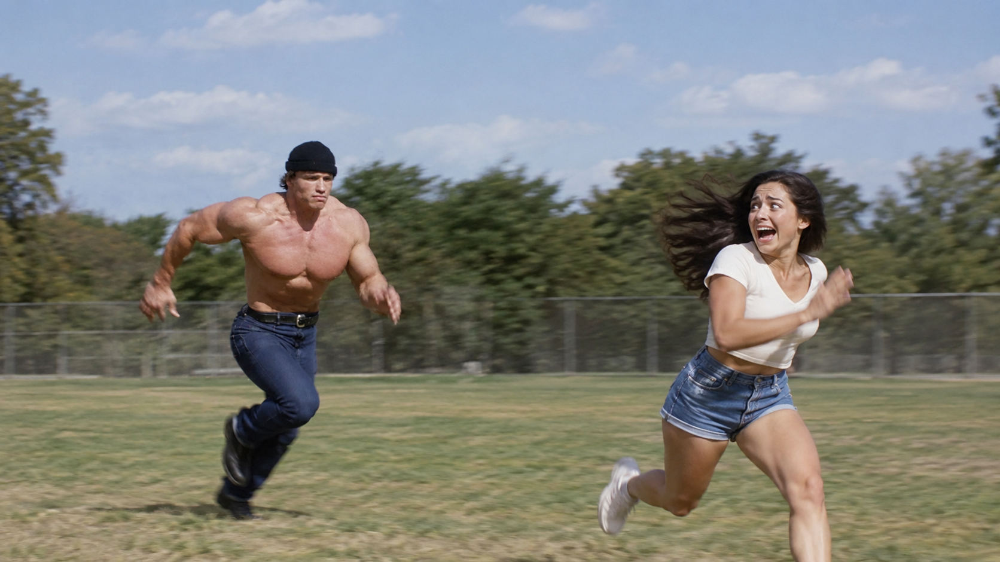
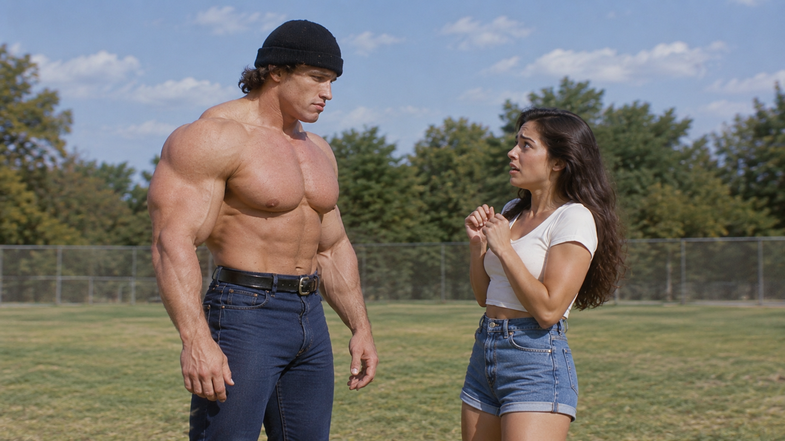
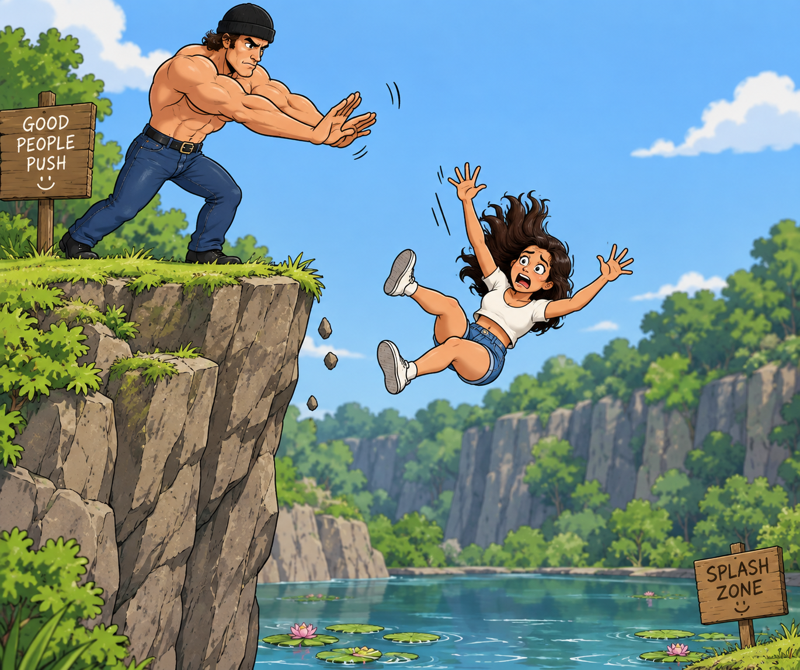
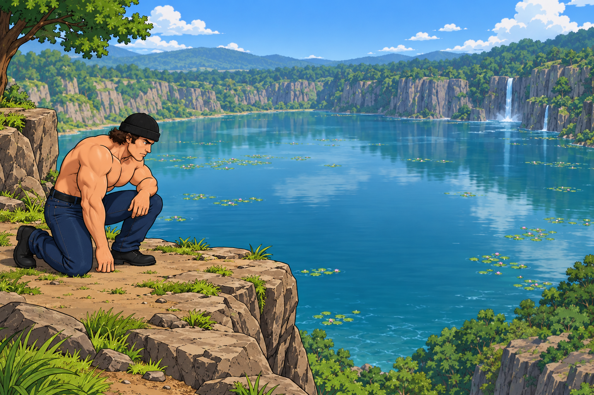
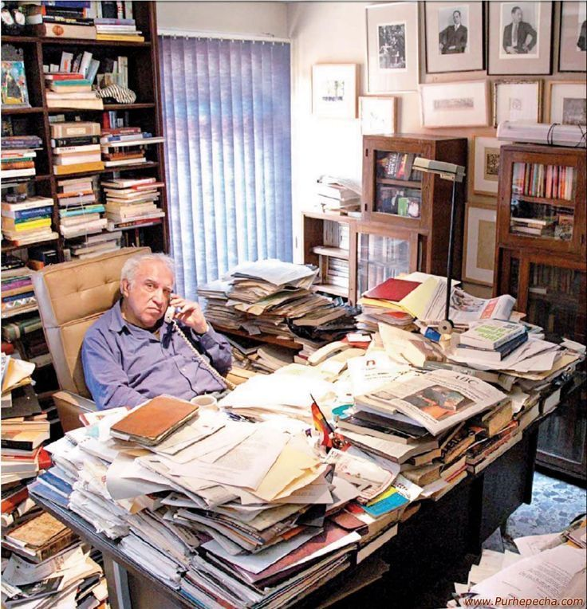
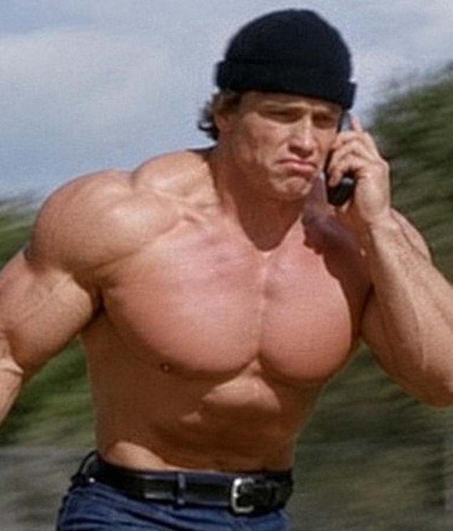
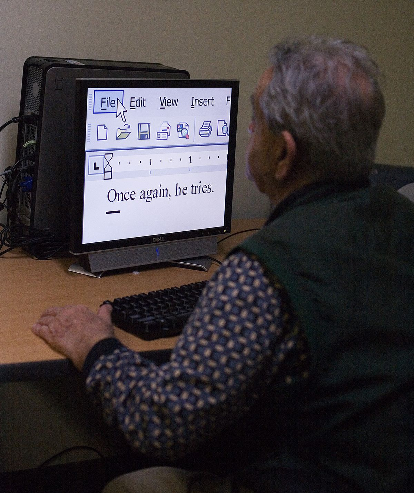
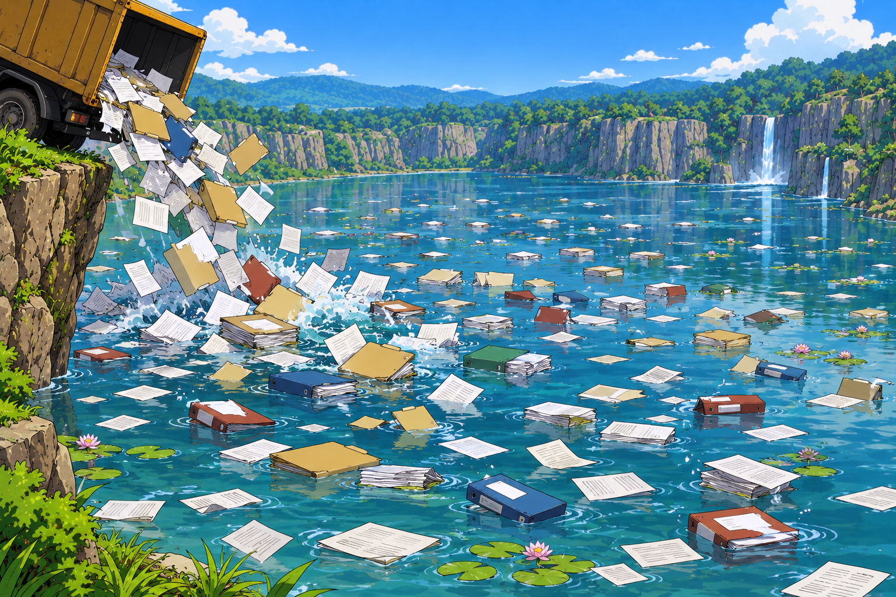
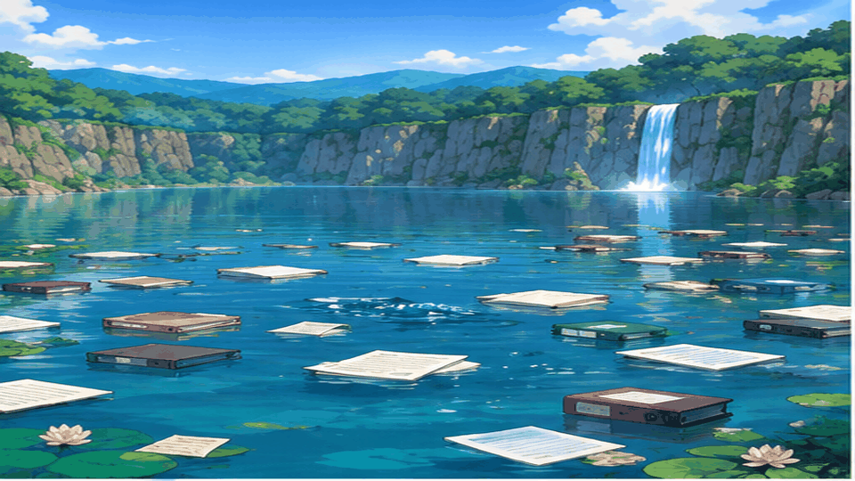
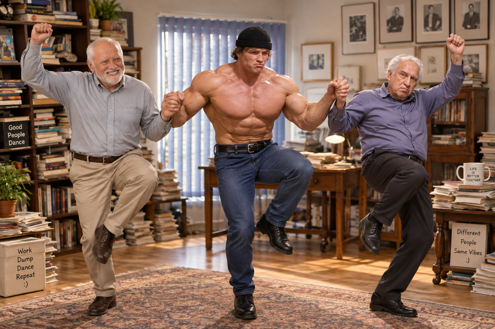

investor
what is investment ?

what should we invest ?
time
money
energy
what should we invest in ?
health
relationships
education
is sending your kids to school a good investment ?

or buying that school is better investment ?

investments are subject to market risks
some of the popular options for financial investments are

Bonds

Shares
Shares are simple
they can go up
they can go down


story time
Patrick
field sales
wanna checkout my bondsAndSharesAddedTodayFinal.pdf
ew PDF, NO!!



what do you want investor !he got the investor
back in the office
joe
register this investor
he saw huge mistake patrick made
bondsAndSharesAddedTodayFinal.pdf
not in approvedBondsAndSharesAddedTodayFinal.pdf

initiate the kyc
in a different cabin..
jack

ofcourse he can't make mistakes... right ?
he did
joe wasn't happy
now imagine monitoring this...
we have a team of disappointed and frustrated stakeholders
remember we have magic
they gave all the files and ..
pond gave back a solution...
a platform

one solution for all the problems
website
new bonds, shares ?
register new investor ?
kyc ?
portfolio ?
transaction history ?
dashboard ?
staff ?
leads ?
helpdesk ?
mass communications ?
SHARE a BOND together
